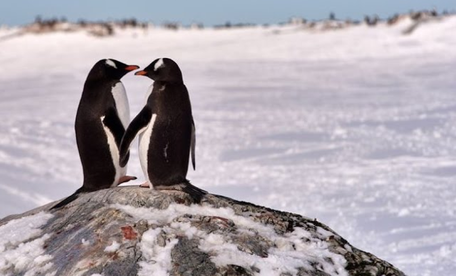
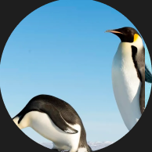

📍 Geórgia do Sul, Ilhas Sandwich do Sul e partes da Península Antártica.

Pingo & Pinga

Organizações como a Antarctic and Southern Ocean Coalition (ASOC) e a plataforma ZOOZ em 2025,
estão trabalhando para ampliar áreas protegidas no oceano Antártico, garantindo alimento e
espaço seguro para os pinguins.